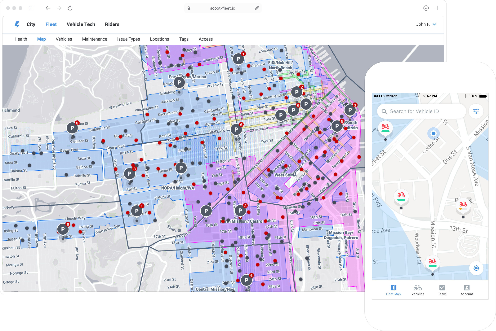

Scoot
Context
Scoot, later acquired by Bird Scooters, provided a shared mobility service for booking electric scooters, e-bikes, and mopeds across the USA, South America, and Europe.
Outcome
As a Design Lead, I established an internal tools team, shaping research and team processes. I spearheaded the launch of the first mobile and desktop tools for fleet management.

Field research
A key aspect of my role involved mapping out field technicians’ workflows and identifying opportunities to enhance them with digital tools. To validate specific workflows, I leveraged a rainbow spreadsheet, ensuring clarity and alignment.
Mobile and desktop fleet tools
I designed a new mobile experience to help users locate vehicles, track shift work, and optimize repetitive tasks using geo-location and vehicle data. Additionally, my team developed desktop tools to automate firmware updates for thousands of electric vehicles.